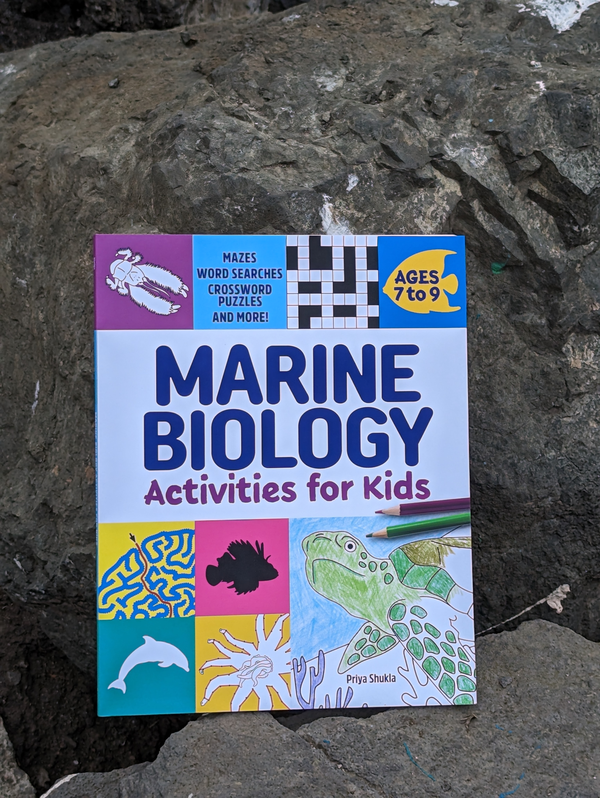
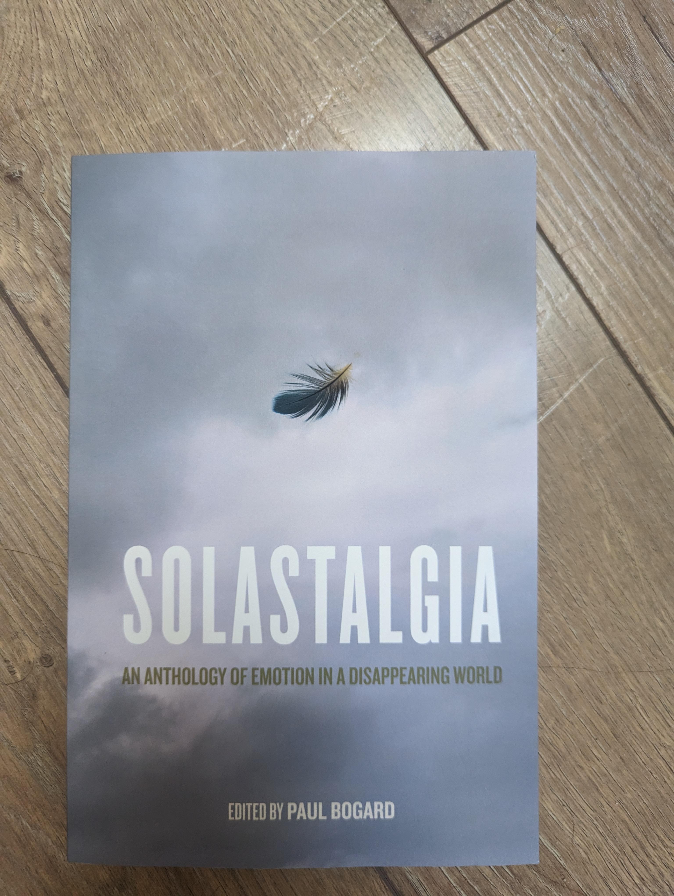

Marine Biology Activities for Kids
Mazes, Word Searches, Crossword Puzzles, and More! (Ages 7-9)
I wrote a children's book, with the kids in my life in mind. These are the animals that I would want them to know about and puzzles/activites that I find enjoyable. I hope you consider sharing it with the kids (or teenagers or adults!) in your life that are curious about the ocean.
Solastalgia
An Anthology of Emotion in a Disappearing World
I was so lucky to contribute to this collection of essays about climate change, loss, and grief edited by Paul Bogard. My piece, entitled "Choosing A Different Future", attempts to connect my culture with my own experiences reckoning with climate change while also considering how these pieces connect to the present.
